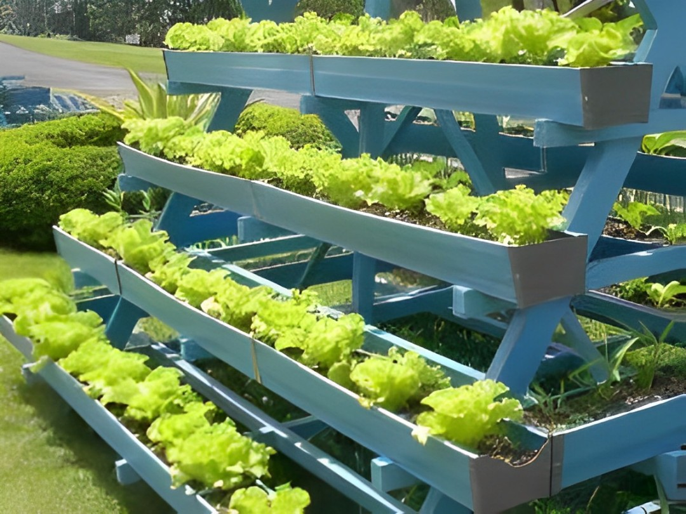
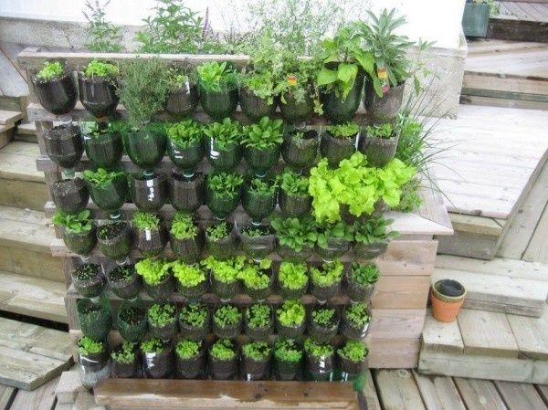
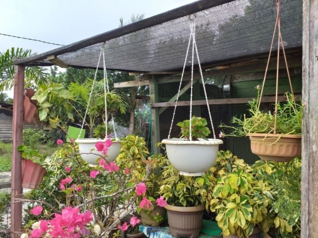
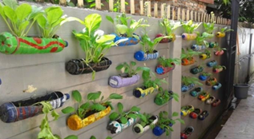

Ini adalah metode di mana tanaman ditanam secara bertingkat menggunakan rak yang disusun hingga jadi mirip tangga. Tujuannya agar semua tanaman bisa mendapat sinar matahari dengan merata. Model ini sangat cocok untuk memaksimalkan pencahayaan dan ruang yang ada.
1. Vertikultur Model Bertingkat

2. Vertikultur Model Bersusun

3. Vertikultur Model Gantung

4. Vertikultur Model Tempel
